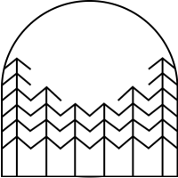
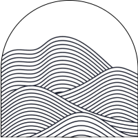
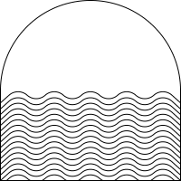
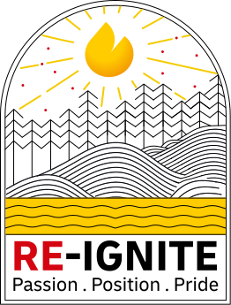
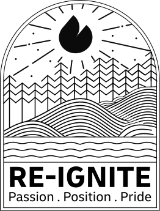
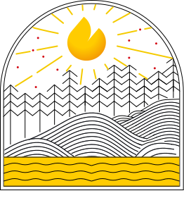
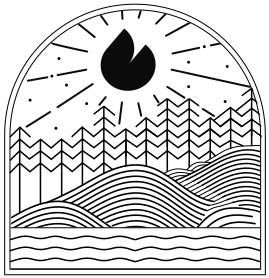

Passion · Trees

Growth with roots.
Passion was expressed through resilience, collective growth, and the strength that comes from rising together — not momentary energy.
The campaign was built during a moment of transition. A new leadership chapter needed more than visual polish — it needed belief, direction, and ownership. The challenge was to avoid a generic “growth” mark and build something specific enough for the team to see themselves in it.
The original idea came from the relationship between logistics and landscape: moving across systems, terrains, and forces that only work when they stay in balance. That made nature more than a visual reference. It became the structure for the identity.
This became the core design move: the identity was not assembled from decorative elements. Each natural form carried a specific strategic role.



The safer direction would have been abstraction: a spark, an arrow, a generic growth symbol. The stronger decision was to stay specific — to let Sri Lanka’s landscape carry the meaning.
The strongest idea in the project was not the final logo itself. It was the chain of reasoning that made the final logo feel inevitable.
A generic growth symbol could have looked professional, but it would not have felt owned. The landscape gave the identity memory, place, and emotional specificity.
Passion, Position, and Pride were not pasted onto symbols. The symbols were chosen because they already carried the values visually and culturally.
The brand colors and type direction were treated as fixed conditions. The job was to give those constraints a stronger story, not fight them.
The full logo should appear only after the logic has been established. The reveal matters because the viewer understands what every part is doing.
Once the symbolic logic is established, the identity can finally appear as a practical logo system — primary and secondary, color and black — without losing the story inside it.




The identity landed because it did not ask the team to adopt a message. It gave shape to something already present: passion, position, and pride — reignited through a landscape they could call their own.